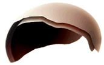
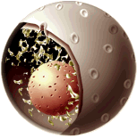
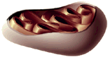
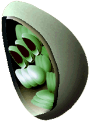
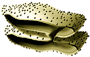
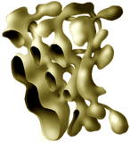
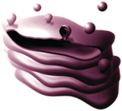
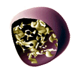
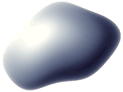
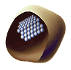

|  |
Plasma Membrane
A lipid/protein/carbohydrate complex, providing a barrier and containing
transport and signaling systems.
|
|  |
Nucleus
Double membrane surrounding the chromosomes and the nucleolus. Pores
allow specific communication with the cytoplasm. The nucleolus is a site for synthesis of RNA making up the ribosome.
|
|  |
Mitochondria
Surrounded by a double membrane with a series of folds called cristae.
Functions in energy production through metabolism. Contains its own DNA,
and is believed to have originated as a captured bacterium.
|
|  |
Chloroplasts (plastids)
Surrounded by a double membrane, containing stacked thylakoid membranes.
Responsible for photosynthesis, the trapping of light energy for the synthesis
of sugars. Contains DNA, and like mitochondria is believed to have
originated as a captured bacterium.
|
|  |
Rough endoplasmic reticulum (RER)
A network of interconnected membranes forming channels within the cell.
Covered with ribosomes (causing the "rough" appearance) which are in the
process of synthesizing proteins for secretion or localization in membranes.
Ribosomes
Protein and RNA complex responsible for protein synthesis.
|
|  |
Smooth endoplasmic reticulum (SER)
A network of interconnected membranes forming channels within the cell. A
site for synthesis and metabolism of lipids. Also contains enzymes for
detoxifying chemicals including drugs and pesticides.
|
|  |
Golgi apparatus
A series of stacked membranes. Vesicles (small membrane surrounded bags)
carry materials from the RER to the Golgi apparatus. Vesicles move between
the stacks while the proteins are "processed" to a mature form. Vesicles then
carry newly formed membrane and secreted proteins to their final destinations
including secretion or membrane localization.
|
|  |
Lysosymes
A membrane bound organelle that is responsible for degrading proteins and
membranes in the cell, and also helps degrade materials ingested by the cell.
|
|  |
Vacuoles
Membrane surrounded "bags" that contain water and storage materials in
plants.
|
|  |
Peroxisomes or Microbodies
Produce and degrade hydrogen peroxide, a toxic compound that can be
produced during metabolism.
|
|
Cell wall
Plants have a rigid cell wall in addition to their cell membranes.
|